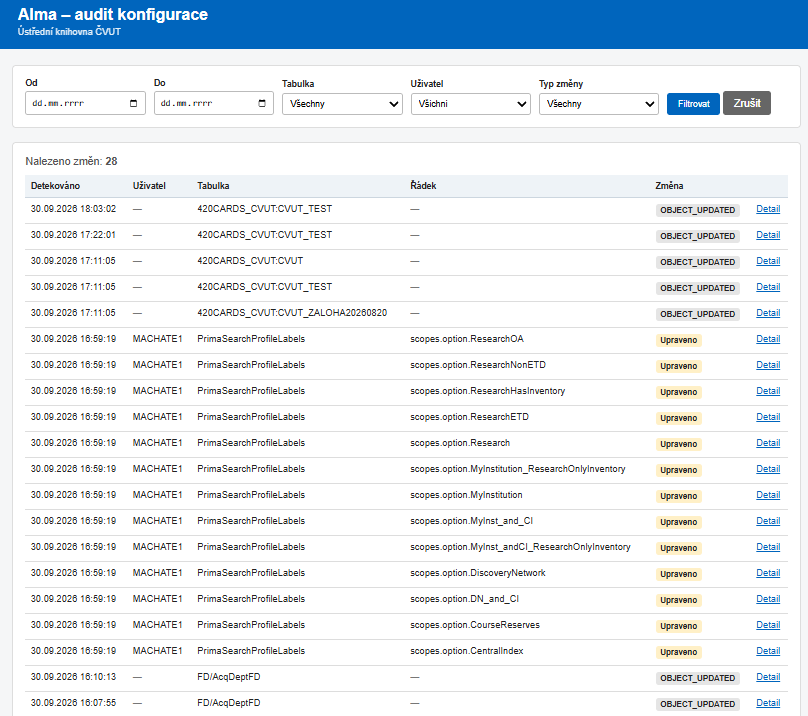
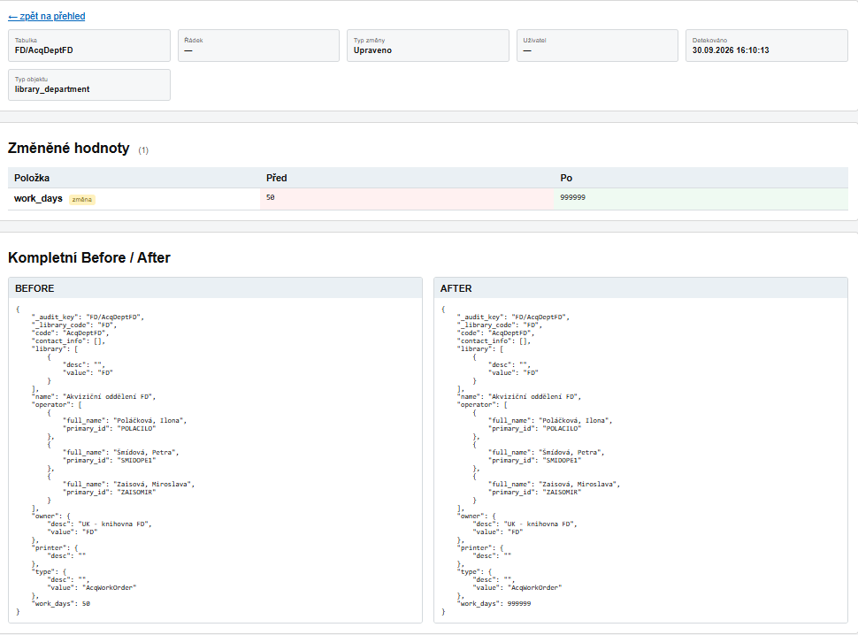
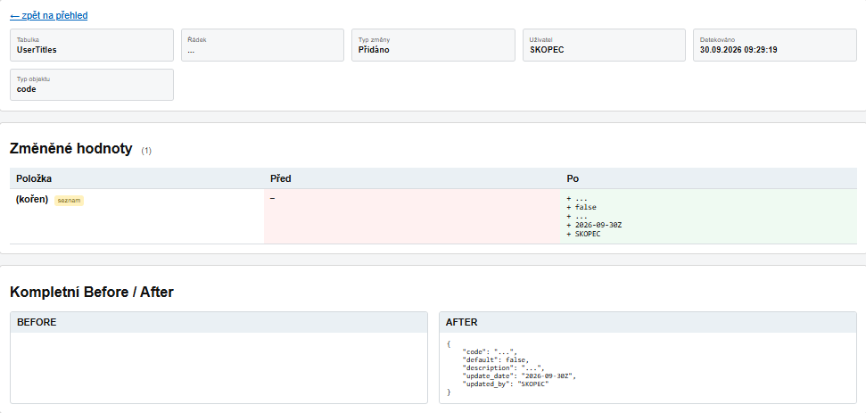
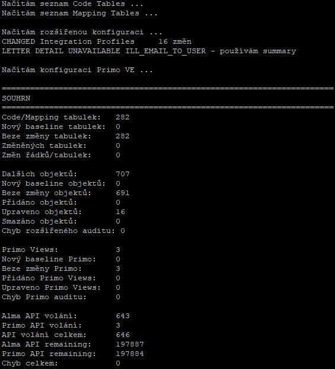

Snapshot/diff audit konfigurace Alma a Primo VE rozšířený o Alma Analytics pro Terms of Use, TOU Policies a Fulfillment Rules.
Opraveny falešné změny Primo VE způsobené nestabilním pořadím řádků v Mapping Table Rapido Self Registration Optional Parameters. Audit nyní tuto konkrétní tabulku před výpočtem hashe stabilně řadí; skutečné změny hodnot zůstávají zachyceny.
Code Tables mohou mít samostatné překlady podle jazyka. Volitelné nastavení code_table_languages = cs,en načte každou Code Table zvlášť pro češtinu a angličtinu. Ve webu se pak zobrazují například jako UserGroups [cs] a UserGroups [en].
Pokud nastavení zůstane prázdné, audit načítá pouze výchozí jazyk instituce stejně jako dříve. První přechod na vícejazyčný režim tiše odstraní staré jednojazyčné baseline, aby samotná změna klíčování nevytvořila falešnou historii.
Některé části Fulfillment konfigurace nejsou veřejným Alma Configuration REST API přímo dostupné. Doplňkový skript proto čte dvě vlastní Analytics analýzy a ukládá je do stejné databáze jako REST/Primo audit.
tou tou_policy fulfillment_rule
U skutečných následných změn vzniká standardní Before → After. Pokud Analytics poskytují metadata změny, web používá skutečný čas a uživatele změny.
API_conf_TOU_Policies, API_conf_Rule a volitelná Configuration Events analýza (na ČVUT API_conf_USER)) nastavte u všech sloupců opakování hodnot / Repeat Values. Skript očekává každý řádek jako úplný samostatný záznam; prázdné opakované hodnoty se z předchozího řádku nedoplňují.Volitelná Analytics analýza nad System Events / Configuration může doplnit přesný čas a uživatele k lokálním změnám Code/Mapping Tables a od verze 1.2.0 také ke změněným Mapping Tables uvnitř Primo VE View. Na ČVUT je report uložen jako API_conf_USER. Funkce se spustí pouze tehdy, když je v konfiguraci vyplněn configuration_events_path.
U všech sloupců musí být zapnuto Repeat Values. Doporučený SQL filtr posledních 10 dní:
"Event Date"."Event Date and Time" >= TIMESTAMPADD(SQL_TSI_DAY, -10, CURRENT_DATE)
Doporučené řazení: Event Date and Time DESC, potom Event Id DESC přes „Přidat sestupné řazení“ a nakonec Event Key Name ASC přes „Přidat vzestupné řazení“. Pořadí sloupců není pro skript důležité.
Event Date and Time nemá v Analytics informaci o časovém pásmu. Nastavení configuration_events_timezone určuje lokální pásmo; výchozí hodnota je Europe/Prague.
analytics_details_json.Volba --import-history je ruční režim pro první nasazení nebo obnovu po výpadku. Z aktuálních Analytics dat vloží poslední známou změnu podle Modification Date / Modified By.
Pokud je v lokální databázi starší snapshot s jinou hodnotou, lze jej použít jako skutečné Before. Pokud starší stav chybí, web historickou událost jasně označí a neprezentuje neznámou hodnotu jako skutečné Before.
alma-config-audit.py
↘
SQLite audit.sqlite3 → PHP web
↗
alma-config-audit-analytics.py
Oba procesy používají společný lock, SQLite WAL a busy_timeout. Současné spuštění se serializuje i při ručním startu.
Hlavní běh bez dalších jazyků: cca 643 Alma REST + 3 Primo API = 646 volání. Při code_table_languages = cs,en přibude přibližně jedno další GET volání na každou Code Table (v referenční instalaci zhruba +196 volání).
Aktuální referenční Analytics snapshot: 35 TOU objektů, 337 TOU/Policy záznamů a 79 Fulfillment Rules. Reporty jsou pod 1000 řádků, takže celý Analytics běh používá 2 API volání.
Hlavní audit běží častěji; Analytics je vhodné pouštět například jednou denně po ETL.
Library Open Hours se záměrně neauditují kvůli automaticky posouvanému kalendáři. ILL_EMAIL_TO_USER při nedostupném detail endpointu používá summary a nejde o chybu běhu.
Jednotný PHP web zobrazuje běžné REST/Primo změny i Analytics historii. U vnořených JSONů provede rekurzivní diff a zobrazí konkrétní změněné cesty. U obohacených Primo změn zobrazuje Analytics autora a časy u příslušné Mapping Table. Lokální název instituce, titul, timezone a cesta k DB jsou pouze v web/config.php; index.php a detail.php jsou stejné pro všechny instalace.




MIT · Copyright © 2026 Ústřední knihovna ČVUT a Antonín Skopec.
Nezávislý nástroj; nejde o produkt ani oficiálně podporovaný nástroj Ex Libris.